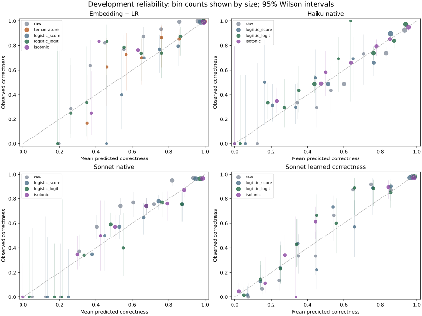
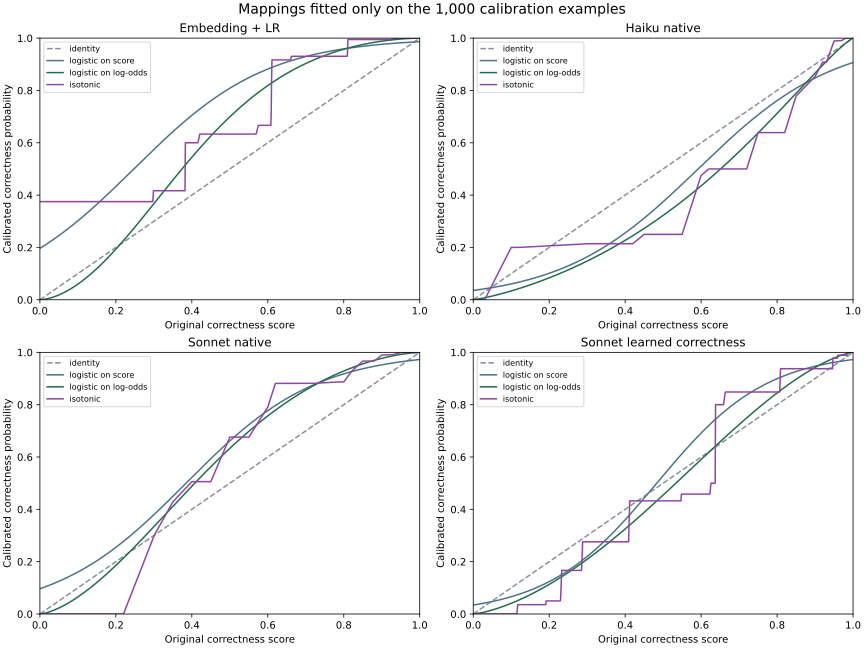
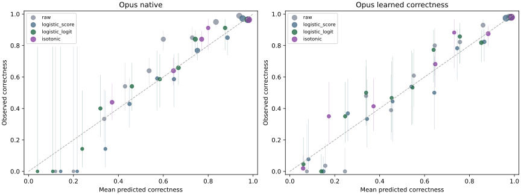
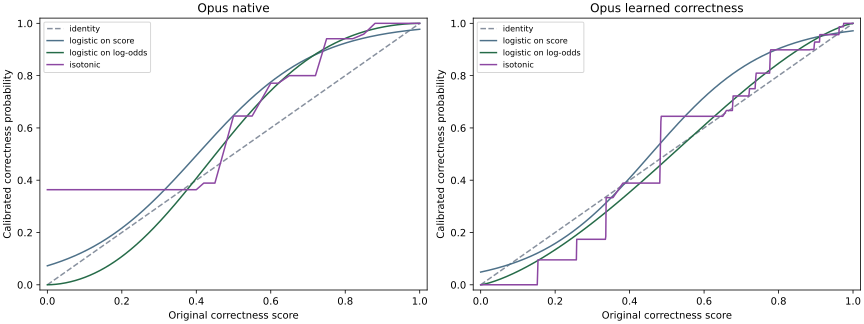

More flexibility did not produce a consistent improvement. For the embedding classifier, temperature scaling reduced Brier loss from 0.03279 to 0.02081 (36.5%). Logistic calibration and isotonic also improved the raw score, but their point estimates were higher. Isotonic minus temperature was +0.00177 in Brier; the paired 95% bootstrap interval [−0.00004, +0.00348] includes zero.
For Haiku native confidence, isotonic and logistic on log-odds were nearly tied. For Sonnet native confidence, logistic on score had the lowest point estimate among these mappings. For Sonnet learned correctness, isotonic was worse than logistic on score: Brier 0.05328 versus 0.05052, with a conditional paired interval for the difference of [+0.00051, +0.00503]. Isotonic assigned probability exactly one to three incorrect development predictions; log loss rose to 0.22409 versus 0.18855. This is a concrete reason to validate flexible calibration on unseen examples.
Calibration remains useful: OpenAI selected-option probability improved with both logistic and isotonic calibration, while the previously fitted temperature transform was harmful for this correctness target. Results depend on the model and target; there is no universally best mapping in this comparison.
| Raw | Temperature | Logistic on score | Logistic on log-odds | Isotonic | |
|---|---|---|---|---|---|
| title | |||||
| Embedding + LR | 0.03279 | 0.02081 | 0.02133 | 0.02166 | 0.02258 |
| Haiku native | 0.14536 | — | 0.14375 | 0.14168 | 0.14164 |
| OpenAI probability | 0.14741 | 0.19034 | 0.14683 | 0.14400 | 0.14547 |
| Opus learned correctness | 0.05092 | — | 0.04991 | 0.04994 | 0.05024 |
| Opus native | 0.09720 | — | 0.08363 | 0.08393 | 0.08548 |
| Sonnet learned correctness | 0.05314 | — | 0.05052 | 0.05193 | 0.05328 |
| Sonnet native | 0.12007 | — | 0.10652 | 0.10706 | 0.10785 |
Each scalar mapping is fitted on the same 1,000 calibration examples and evaluated on the same separate 1,000 development examples. Class predictions stay fixed. Logistic on score reproduces the existing sigmoid calibrator (C=1); logistic on log-odds uses logit(p) as its feature with C=1 and clipping at 10⁻⁷. Isotonic is non-decreasing with clipped out-of-range inputs. No calibration settings were chosen using development performance.
Temperature is a different intervention: the original single-parameter multiclass logit scaling, optimized for multiclass log loss. Isotonic fits binary correctness squared error. A win in binary Brier is therefore not evidence of better full class probabilities. Brier measures discrimination as well as calibration. Isotonic can introduce ties and change ranking metrics. Binned reliability estimates remain noisy.
Log loss clips exact zero/one predictions at 10⁻⁷, consistently with the original report; without clipping an incorrect probability-one prediction has infinite log loss. Coverage reuses development outcomes to choose a threshold and is exploratory, with no independent guarantee. Paired bootstrap Brier intervals in analysis.json condition on the fitted calibrators and omit calibration-training uncertainty. Official test data remains reserved. All recorded source and frozen-artifact hashes were checked.
| title | method | calibration_errors | brier | log_loss | error_auroc | coverage | exact_one_errors |
|---|---|---|---|---|---|---|---|
| Embedding + LR | raw | 39 | 0.03279 | 0.13262 | 0.96087 | 0.89200 | 0 |
| Embedding + LR | temperature | 39 | 0.02081 | 0.07096 | 0.96218 | 0.89500 | 0 |
| Embedding + LR | logistic_score | 39 | 0.02133 | 0.08415 | 0.96087 | 0.89200 | 0 |
| Embedding + LR | logistic_logit | 39 | 0.02166 | 0.07385 | 0.96087 | 0.89200 | 0 |
| Embedding + LR | isotonic | 39 | 0.02258 | 0.07457 | 0.95593 | 0.84500 | 0 |
| Embedding + MLP | raw | 29 | 0.02235 | 0.07486 | 0.95992 | 0.86700 | 0 |
| Embedding + MLP | temperature | 29 | 0.02264 | 0.07596 | 0.95982 | 0.86500 | 0 |
| Embedding + MLP | logistic_score | 29 | 0.02555 | 0.10268 | 0.95992 | 0.86700 | 0 |
| Embedding + MLP | logistic_logit | 29 | 0.02227 | 0.07563 | 0.95992 | 0.86700 | 0 |
| Embedding + MLP | isotonic | 29 | 0.02350 | 0.07846 | 0.95724 | 0.81800 | 0 |
| Haiku native | raw | 252 | 0.14536 | 0.44340 | 0.81536 | 0.00000 | 0 |
| Haiku native | logistic_score | 252 | 0.14375 | 0.44884 | 0.81536 | 0.00000 | 0 |
| Haiku native | logistic_logit | 252 | 0.14168 | 0.43409 | 0.81536 | 0.00000 | 0 |
| Haiku native | isotonic | 252 | 0.14164 | 0.43148 | 0.81293 | 0.00000 | 0 |
| Haiku verifier | raw | 252 | 0.13878 | 0.42612 | 0.83051 | 0.00000 | 0 |
| Haiku verifier | logistic_score | 252 | 0.14114 | 0.44108 | 0.83051 | 0.00000 | 0 |
| Haiku verifier | logistic_logit | 252 | 0.13775 | 0.42577 | 0.83051 | 0.00000 | 0 |
| Haiku verifier | isotonic | 252 | 0.13667 | 0.43082 | 0.82886 | 0.00000 | 1 |
| Haiku learned correctness | raw | 252 | 0.05958 | 0.20930 | 0.96125 | 0.00000 | 0 |
| Haiku learned correctness | logistic_score | 252 | 0.05780 | 0.20996 | 0.96125 | 0.00000 | 0 |
| Haiku learned correctness | logistic_logit | 252 | 0.05851 | 0.20595 | 0.96125 | 0.00000 | 0 |
| Haiku learned correctness | isotonic | 252 | 0.05851 | 0.20568 | 0.95901 | 0.00000 | 0 |
| TF-IDF + LR | raw | 118 | 0.14516 | 0.43838 | 0.86719 | 0.00000 | 0 |
| TF-IDF + LR | temperature | 118 | 0.07541 | 0.24857 | 0.90102 | 0.00000 | 0 |
| TF-IDF + LR | logistic_score | 118 | 0.08681 | 0.27952 | 0.86719 | 0.00000 | 0 |
| TF-IDF + LR | logistic_logit | 118 | 0.08570 | 0.27497 | 0.86719 | 0.00000 | 0 |
| TF-IDF + LR | isotonic | 118 | 0.08746 | 0.31935 | 0.86230 | 0.00000 | 1 |
| Sonnet native | raw | 184 | 0.12007 | 0.37825 | 0.83475 | 0.00000 | 0 |
| Sonnet native | logistic_score | 184 | 0.10652 | 0.34301 | 0.83475 | 0.00000 | 0 |
| Sonnet native | logistic_logit | 184 | 0.10706 | 0.34484 | 0.83475 | 0.00000 | 0 |
| Sonnet native | isotonic | 184 | 0.10785 | 0.36120 | 0.83236 | 0.00000 | 1 |
| Sonnet verifier | raw | 184 | 0.12492 | 0.38947 | 0.83419 | 0.00000 | 0 |
| Sonnet verifier | logistic_score | 184 | 0.10755 | 0.34549 | 0.83419 | 0.00000 | 0 |
| Sonnet verifier | logistic_logit | 184 | 0.10735 | 0.34234 | 0.83419 | 0.00000 | 0 |
| Sonnet verifier | isotonic | 184 | 0.10790 | 0.37281 | 0.83473 | 0.00000 | 1 |
| Sonnet learned correctness | raw | 184 | 0.05314 | 0.19207 | 0.95203 | 0.00000 | 0 |
| Sonnet learned correctness | logistic_score | 184 | 0.05052 | 0.18855 | 0.95203 | 0.00000 | 0 |
| Sonnet learned correctness | logistic_logit | 184 | 0.05193 | 0.19069 | 0.95203 | 0.00000 | 0 |
| Sonnet learned correctness | isotonic | 184 | 0.05328 | 0.22409 | 0.94519 | 0.00000 | 3 |
| Opus native | raw | 133 | 0.09720 | 0.32562 | 0.85111 | 0.00000 | 0 |
| Opus native | logistic_score | 133 | 0.08363 | 0.28069 | 0.85111 | 0.00000 | 0 |
| Opus native | logistic_logit | 133 | 0.08393 | 0.27961 | 0.85111 | 0.00000 | 0 |
| Opus native | isotonic | 133 | 0.08548 | 0.37467 | 0.83956 | 0.00000 | 8 |
| Opus verifier | raw | 133 | 0.08972 | 0.30424 | 0.85511 | 0.00000 | 0 |
| Opus verifier | logistic_score | 133 | 0.08156 | 0.27726 | 0.85511 | 0.00000 | 0 |
| Opus verifier | logistic_logit | 133 | 0.08111 | 0.27250 | 0.85511 | 0.00000 | 0 |
| Opus verifier | isotonic | 133 | 0.08206 | 0.36418 | 0.84726 | 0.00000 | 8 |
| Opus learned correctness | raw | 133 | 0.05092 | 0.18243 | 0.93902 | 0.00000 | 0 |
| Opus learned correctness | logistic_score | 133 | 0.04991 | 0.18559 | 0.93902 | 0.00000 | 0 |
| Opus learned correctness | logistic_logit | 133 | 0.04994 | 0.18078 | 0.93902 | 0.00000 | 0 |
| Opus learned correctness | isotonic | 133 | 0.05024 | 0.24683 | 0.92896 | 0.00000 | 5 |
| OpenAI confidence | raw | 255 | 0.14724 | 0.47053 | 0.82427 | 0.00000 | 1 |
| OpenAI confidence | logistic_score | 255 | 0.14688 | 0.45547 | 0.82427 | 0.00000 | 0 |
| OpenAI confidence | logistic_logit | 255 | 0.14401 | 0.44914 | 0.82427 | 0.00000 | 0 |
| OpenAI confidence | isotonic | 255 | 0.14547 | 0.51335 | 0.82282 | 0.00000 | 0 |
| OpenAI probability | raw | 255 | 0.14741 | 0.47074 | 0.82427 | 0.00000 | 1 |
| OpenAI probability | logistic_score | 255 | 0.14683 | 0.45528 | 0.82427 | 0.00000 | 0 |
| OpenAI probability | temperature | 255 | 0.19034 | 0.56491 | 0.81225 | 0.00000 | 0 |
| OpenAI probability | logistic_logit | 255 | 0.14400 | 0.44920 | 0.82427 | 0.00000 | 0 |
| OpenAI probability | isotonic | 255 | 0.14547 | 0.51335 | 0.82282 | 0.00000 | 0 |



